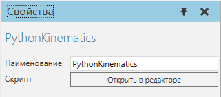
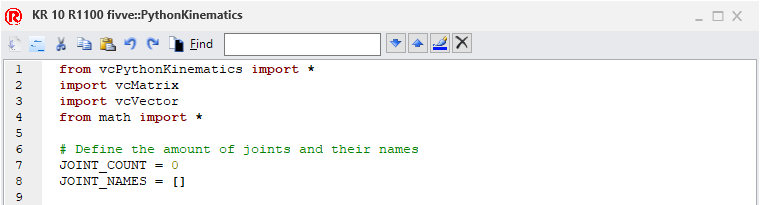

Кинематика Python |
|
Поведение кинематика Python позволяет определить прямую и/или обратную кинематику для робота с помощью сценария написанного на языке программирования Python.  Свойства
РедакторЧтобы получить доступ к редактору скриптов: ·На панели Диаграмма компонента, Дерево узлов компонента, найдите поведение Python Kinematics, которое вы хотите изменить, а затем дважды щелкните это поведение. Редактор скриптов такой же, как и для Python Script.  Исходное содержимое редактора содержит фрагмент кода, используемый для определения свойств кинематического объекта, соответствующего роботу и его контроллеру:
|